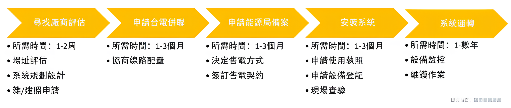

- 設置太陽能裝置，需經過以下5個步驟： 
- 在太陽能建置流程的第一步是進行詳細的規劃評估。這包括分析場地條件、日照量、能源需求和經濟效益。專業工程師會進行現場勘查，確定最佳的太陽能板安裝位置及角度，同時評估建築結構的承載能力和電網接入點。通過這些分析，我們可以制定出一個高效且符合需求的太陽能系統設計方案，為後續步驟奠定堅實的基礎。
- 在確定規劃方案後，需要向台灣電力公司（台電）提交申請，獲得並網許可。這一過程包括提交申請表、提供系統設計圖紙和相關技術資料。台電會對申請進行審核，確保系統設計符合安全和技術標準。通過審核後，台電會安排現場勘查，確定並網接入點和技術要求。完成這一階段，才能進行下一步的施工和安裝。
- 在獲得所有必要的許可後，可以進行太陽能系統的安裝施工。專業施工團隊會根據設計方案，安裝太陽能板、逆變器和相關電氣設備。施工過程中，需確保所有設備安裝牢固，電氣連接正確，並遵循安全操作規範。安裝完成後，會進行初步測試，確保系統各部分運行正常，為後續的並網和調試做好準備。
- 倡導資源的循環利用和廢棄物的最小化，推動產品設計和生產方式的變革。通過再製造、再利用和回收，我們將構建一個高效、閉環的經濟模式。
- 安裝完成後，系統將進入運轉和調試階段。首先進行全面的系統測試，確保各組件正常運行，輸出功率達到設計要求。接下來，與台電進行並網操作，完成並網驗收。系統正式運行後，還需進行定期維護和檢查，確保系統穩定高效運行。透過持續的監控和優化，我們可以最大化太陽能系統的效益，為用戶提供清潔、可再生的能源。
- 架設太陽能發電裝置的第一步，是評估設置地點是否符合申請資格，根據內政部營建署的設置再生能源設施免請領雜項執照標準第三條，設置建築需符合以下類別之一：
- 依建築法規定取得建造執照及其使用執照，或合於建築法第九十八條規定之合法建築物。實施建築管理前，已建造完成之合法建築物。
- 經直轄市、縣（市）政府依其自治條例所許可設置太陽光電發電設備之建築構造物。
- 依廢止前臺灣省違章建築拆除認定基準第二點第十款規定，取得專供畜禽生產證明文件，或取得專供農業生產之寮舍接水、接電證明書且專供畜禽生產之寮舍。
- 完整法規訊息請參考設置再生能源設施免請領雜項執照標準之規定，或請太陽能系統商協助您確認法規條文。建議您尋找具規模、有豐富架設太陽能裝置經驗的廠商，如中租-全民電廠，已經有完整的建置規劃流程，可協助您排除規劃時的總總疑難雜症。
太陽能建置流程有哪些?本文帶您完整瞭解
政府大力推動綠能產業、躉購政策，架設太陽能發電裝置後可以穩定的獲得綠電收益，但是架設太陽能建置過程費時、申請文件繁雜，本篇將說明整體流程與細節。
太陽能建置流程怎麼進行？
規劃評估
台電申請
向能源局進行太陽能送件流程
安裝系統
系統運轉
太陽能建置流程怎麼進行？